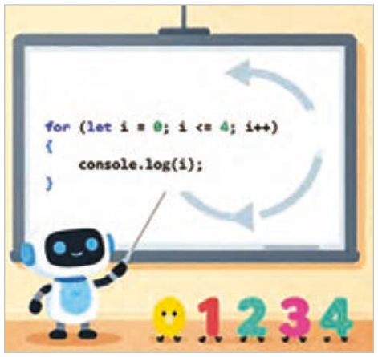
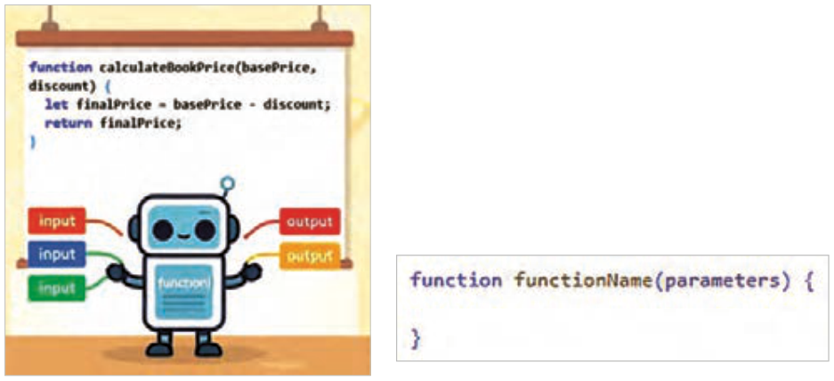

در زبانهای برنامهنویسی برای تکرار اجرای یک بخش از برنامه از دستورات حلقه استفاده میشود. حلقههای تکرار باعث کاهش حجم برنامه، خوانایی کد، بهینهسازی الگوریتم برنامه و افزایش کارایی برنامه میشوند. حلقههای تکرار انواع مختلفی دارند. در زبان جاوااسکریپت این حلقهها شامل for، while، do while، for…of و for…in است.
حلقۀ for
زمانی که تعداد دفعات تکرار یک کار مشخص باشد، از حلقۀ for استفاده میشود. شکل کلی حلقۀ for بهصورت زیر است:
for (Initialization; Condition; Increment/Decrement) {
کدی که باید تکرار شود
}
حلقۀ for نیازمند یک شمارنده برای شمارش تعداد دفعات اجرای حلقه است. شمارنده حلقه یک متغیر است که دارای مقدار اولیه و پایانی است. عبارت Initiliazation به مقداردهی اولیه شمارنده حلقه اشاره دارد. در قسمت Condition شرط تکرار حلقه بررسی میشود. برای خروج از حلقه، شرط حلقه باید نقض شود. بدین منظور شمارنده حلقه باید در هر بار تکرار حلقه افزوده یا کاسته شود تا مقدار شمارنده از مقدار پایانی گذر کند. عبارات Increment و Decrement بهمعنای افزایش و کاهش مقدار شمارنده است. در صورت عدم استفاده از آکولاد برای تعیین محدوده بلوک حلقه، فقط اولین دستور جزء حلقه به شمار میآید.

شکل ۱۱
صفحه ۲۱۴
صفحه ۲۱۵
حلقه for…of: این حلقه برای پیمایش عناصر یک مجموعه قابل تکرار مانند آرایه، رشته، مجموعه و ... استفاده میشود. حلقه for…of امکان دسترسی به مقادیر عناصر آرایه را فراهم میکند.
حلقه for … in: این حلقه برای پیمایش کلیدهای اشیا (Objects) و اندیس آرایهها استفاده میشود. شکل کلی ساختار for … of و for … in بهصورت زیر است:
جدول ۲۲
for … in
for … of
for (const key in object) { …... }
for (const element of iterable) { ….. }
متغیر element به عناصر آرایه، مجموعه یا کاراکترهای یک رشته و iterable به شیء قابل تکرار اشاره دارد. متغیر key به کلید عناصر شیء و اندیس عناصر آرایه اشاره دارد.
صفحه ۲۱۶
دستور break
این دستور برای خروج از حلقه یا ساختار Switch بهکار میرود. اگر دستور break درون حلقه استفاده شود، اجرای تمام دستورات بعد از آن متوقف شده و خروج از حلقه صورت میگیرد.
دستور continue
بهکارگیری دستور continue در یک حلقه باعث میشود که اجرای فعلی حلقه متوقف و دور بعدی حلقه اجرا شود. به این معنی که بعد از اجرای دستور continue کنترل برنامه به ابتدای حلقه منتقل میشود و دور بعدی حلقه (در صورت امکان) اجرا میشود.
صفحه ۲۱۷
صفحه ۲۱۸
توابع(Functions) در زبانهای برنامهنویسی به بلوکهای کدی که یک کار مشخص را انجام میدهند، تابع گفته میشود. برنامهنویس میتواند مجموعهای از دستورالعملها را در قالب یک تابع گروهبندی کند و سپس آن را به عنوان یک واحد مجزا مورد استفاده قرار دهد. این واحدهای مجزا میتوانند بارها مورد استفاده قرار گیرند. استفاده از توابع در برنامهنویسی نهتنها سرعت توسعه را افزایش میدهد، بلکه خوانایی و قابلیت نگهداری کد را نیز افزایش میدهد. مجموعه دستورات نوشتهشده برای ایجاد یک تابع، تحت یک نام مشخص قابل فراخوانی هستند. یک تابع میتواند مقادیری را بهعنوان ورودی دریافت کند و بعد از اجرای دستورات داخل تابع، مقداری را بهعنوان خروجی برگرداند.
در جاوااسکریپت برای ایجاد یک تابع از شکل کلی زیر استفاده میشود:

شکل ۱۲
Page 213
Loop statements
In programming languages, loop statements are used to repeat the running of a part of the program. Loops reduce the size of the program, improve the readability of the code, optimise the algorithm of the program and increase the efficiency of the program. Loops have different types. In JavaScript these loops include for, while, do while, for…of and for…in.
The for loop
When the number of repeats of a job is known, the for loop is used. The general form of the for loop is as follows:
for (Initialization; Condition; Increment/Decrement) {
The code that must be repeated
}
The for loop needs a counter to count the number of times the loop runs. The loop counter is a variable that has a starting and an ending value. The phrase Initialization points to giving the loop counter its initial value. In the Condition part, the repeat condition of the loop is checked. To leave the loop, the loop condition must be violated. For this purpose the loop counter must be increased or decreased on every repeat of the loop so that the value of the counter passes the ending value. The phrases Increment and Decrement mean increasing and decreasing the value of the counter. If curly braces are not used to mark the range of the loop block, only the first statement counts as part of the loop.
Figure 11
Page 214
Page 215
The for…of loop: this loop is used to go over the elements of an iterable collection such as an array, a string, a set and so on. The for…of loop makes it possible to reach the values of the elements of an array.
The for … in loop: this loop is used to go over the keys of objects and the indexes of arrays. The general form of the for … of and for … in structures is as follows:
Table 22
for … in
for … of
for (const key in object) { …... }
for (const element of iterable) { ….. }
The variable element points to the elements of the array, the set or the characters of a string, and iterable points to the iterable object. The variable key points to the key of the elements of the object and the index of the elements of the array.
Page 216
The break statement
This statement is used to leave a loop or a Switch structure. If the break statement is used inside a loop, the running of all the statements after it stops and the loop is left.
The continue statement
Using the continue statement in a loop makes the current run of the loop stop and the next round of the loop run. This means that after the continue statement runs, the control of the program moves to the start of the loop and the next round of the loop is run (if possible).
Page 217
Page 218
Functions: in programming languages, blocks of code that do one specific job are called functions. The programmer can group a set of instructions in the form of a function and then use it as a separate unit. These separate units can be used many times. Using functions in programming not only increases the speed of development, but also increases the readability and maintainability of the code. The set of statements written to create a function can be called under a specific name. A function can receive values as input and, after the statements inside the function run, return a value as output.
In JavaScript the following general form is used to create a function: